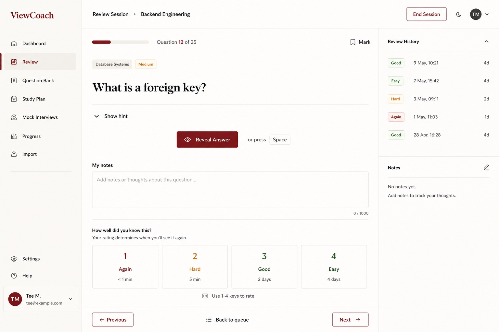

ProofLoop
From scattered preparation to measurable interview readiness.
An adaptive Django workspace that connects learning paths, spaced recall, mock interviews, personal evidence and interview deadlines, then recommends the most useful next preparation action.
Adaptive planning
Spaced review
Evidence system
Grounded AI